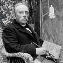

The Sleeping Gypsy
Henri Rousseau

1897
The Sleeping Gypsy (French: La Bohémienne endormie) is an 1897 oil painting by French Naïve artist Henri Rousseau (1844–1910). It is a fantastical depiction of a lion musing over a sleeping woman on a moonlit night. Rousseau first exhibited the painting at the 13th Salon des Indépendants, and tried unsuccessfully to sell it to the mayor of his hometown, Laval. Instead, it entered the private collection of a Parisian charcoal merchant where it remained until 1924, when it was discovered by the art critic Louis Vauxcelles."